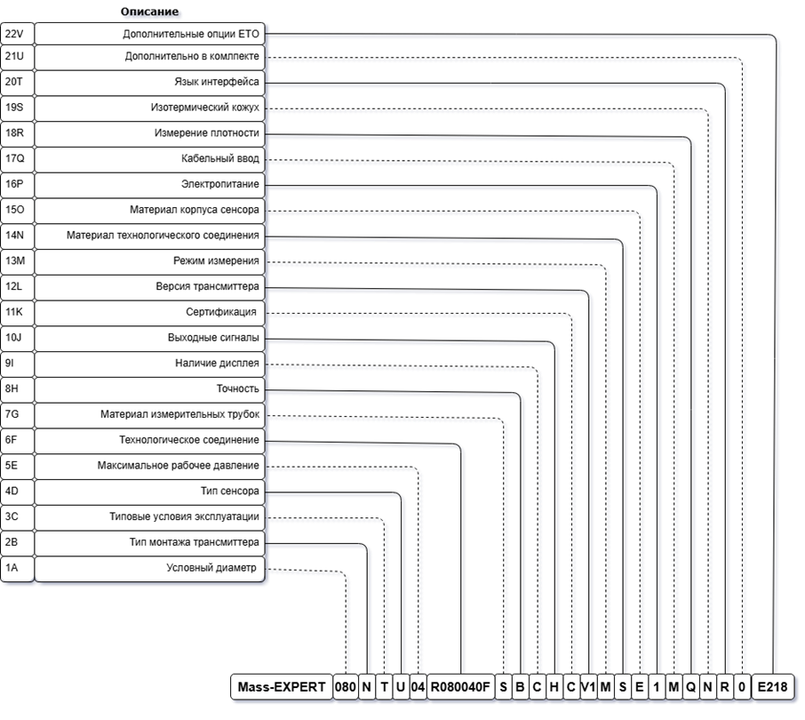

Каждый блок кодирует определённую опцию в коде модели расходомера Mass-EXPERT. Ниже приведены все 23 таблицы с кодами, описаниями и примечаниями.
К модификациям
| Код | DN | Макс. расход, кг/мин | Макс. расход, кг/ч |
|---|---|---|---|
| 001 | DN01 | 0,2 | 12 |
| 002 | DN02 | 1,6 | 96 |
| 003 | DN03 | 3 | 180 |
| 004 | DN04 | 5 | 300 |
| 008 | DN08 | 20 | 1 200 |
| 015 | DN15 | 60 | 3 600 |
| 020 | DN20 | 100 | 6 000 |
| 025 | DN25 | 200 | 12 000 |
| 040 | DN40 | 450 | 27 000 |
| 050 | DN50 | 650 | 39 000 |
| 080 | DN80 | 2 000 | 120 000 |
| 100 | DN100 | 3 000 | 180 000 |
| 150 | DN150 | 12 000 | 720 000 |
| 200 | DN200 | 18 000 | 1 080 000 |
| 250 | DN250 | 29 000 | 1 740 000 |
| Код | Описание | Примечание |
|---|---|---|
| T | Стандартное исполнение | −50…+150 °C, P≤10 МПа |
| P | Повышенное давление | −50…+150 °C |
| L | Криогенное исполнение | −196…+150 °C, только U/Δ-модели |
| D | Сверхнизкие температуры | −255…+150 °C, только раздельное исполнение |
| G | Высокая температура | −50…+230 °C, только раздельное исполнение |
| C | Сверхвысокая температура | −50…+350 °C, только раздельное исполнение |
| X | Особые условия эксплуатации | требуется подробное описание |
| Код | Описание | Примечание |
|---|---|---|
| U | U-образный тип измерительных трубок | только для ≥ DN03 |
| K | Широкий U-образный тип измерительных трубок | только DN02–DN25 |
| W | Микроизгиб измерительных трубок | |
| L | Прямотрубный | |
| D | Треугольный Δ-тип измерительных трубок | только DN01, DN02, DN25 |
| X | Специальное исполнение | требуется описание |
| Код | Давление, МПа | Примечание |
|---|---|---|
| 02 | 1,6 | |
| 04 | 4 | по умолчанию: фланец, мин. класс 4 МПа |
| 06 | 6,3 | |
| 10 | 10 | |
| 16 | 16 | |
| 20 | 20 | |
| 25 | 25 | |
| 30 | 30 | |
| 35 | 35 | |
| 40 | 40 | |
| 45 | 45 | |
| 70 | 70 | |
| 90 | 90 | |
| XX | Специальное | требуется описание |
| Код | Стандарт | Примечание |
|---|---|---|
| RXXXYYYZ | ГОСТ 33259 | XXX-DN, мм; YYY-PN, кгс/см²; Z-исполнение |
| ENXXXYYYZ | EN 1092-1 | XXX-DN, мм; YYY-PN, бар; Z-исполнение |
| ASXXYYYYZZZ | ASME B16.5 | XX-DN, дюйм; YYYY-Class; ZZZ-исполнение |
| FR | HG/T 20592-2009 WN RF PN16 | DN10–DN300 |
| FQ | HG/T 20592-2009 WN RF PN25 | DN10–DN300 |
| FT | HG/T 20592-2009 WN RF PN40 | DN10–DN300 |
| FU | HG/T 20592-2009 WN RF PN63 | DN10–DN300 |
| FV | HG/T 20592-2009 WN RF PN100 | DN10–DN300 |
| FW | HG/T 20592-2009 WN RF PN160 | DN10–DN300 |
| FA | HG/T 20615-2009 WN RF Class150 | DN15–DN300 |
| FB | HG/T 20615-2009 WN RF Class300 | DN15–DN300 |
| FC | HG/T 20615-2009 WN RF Class600 | DN15–DN300 |
| FD | HG/T 20615-2009 WN RF Class900 | DN15–DN300 |
| FE | HG/T 20615-2009 WN RF Class1500 | DN15–DN300 |
| GS | Резьба G | трубная |
| G4 | Резьба G1/4" | трубная |
| G2 | Резьба G1/2" | трубная |
| G1 | Резьба G1" | трубная |
| DS | DIN 11851-SI | мм |
| DT | DIN 11851-US | дюймы |
| DU | DIN 11864-1 Form A, резьбовое | санитарное |
| DV | DIN 11864-2 Form A, плоский фланец | |
| GT | GB/T 9115-2010 RF PN25 | DN10–DN300 |
| GU | GB/T 9115-2010 RF PN16 | DN10–DN300 |
| GV | GB/T 9115-2010 RF PN40 | DN10–DN300 |
| GW | GB/T 9115-2010 RF PN63 | DN10–DN300 |
| GX | GB/T 9115-2010 RF PN100 | DN10–DN300 |
| GY | GB/T 9115-2010 RF PN160 | DN10–DN300 |
| US | UNF резьба | коническая |
| UA | UNF резьба 9/16-18UNF | коническая |
| UB | UNF резьба 1 3/8-12UNF | коническая |
| RC | Резьба RC | |
| RD | Резьба Rc 3/4" | |
| HS | Tri-clamp DN32676:2022-10 | ∅25 |
| HA | Tri-clamp DN32676:2022-10 | ∅34 |
| HB | Tri-clamp DN32676:2022-10 | ∅50,5 |
| HC | Tri-clamp DN32676:2022-10 | ∅64 |
| HD | Tri-clamp DN32676:2022-10 | ∅91 |
| AS | ASME B16.5-2020, приварной Class 150 | 1/2–12" |
| AT | ASME B16.5-2020 Class 300 | 1/2–12" |
| AU | ASME B16.5-2020 Class 600 | 1/2–12" |
| AV | ASME B16.5-2020 Class 900 | 1/2–12" |
| AW | ASME B16.5-2020 Class 1500 | 1/2–12" |
| AX | ASME B16.5-2020 Class 2500 | 1/2–12" |
| GA | GOST 12821-80, 1.6 МПа | DN10–DN300 |
| GB | GOST 12821-80, 2.5 МПа | DN10–DN300 |
| GC | GOST 12821-80, 4 МПа | DN10–DN300 |
| GD | GOST 12821-80, 6.3 МПа | DN10–DN300 |
| GE | GOST 12821-80, 10 МПа | DN10–DN300 |
| GF | GOST 12821-80, 16 МПа | DN15–DN300 |
| GG | GOST 12821-80, 20 МПа | DN15–DN300 |
| GH | GOST 33259-2015 PN16-B | DN15–DN300 |
| GJ | GOST 33259-2015 PN25-B | DN15–DN300 |
| GK | GOST 33259-2015 PN40-B | DN15–DN300 |
| GL | GOST 33259-2015 PN63-B | DN15–DN300 |
| GM | GOST 33259-2015 PN100-B | DN15–DN300 |
| GN | GOST 33259-2015 PN160-B | DN15–DN300 |
| ES | EN 1092-1:2007(E) Type11 PN16 | DN10–DN300 |
| ET | EN 1092-1:2007(E) Type11 PN25 | DN10–DN300 |
| EU | EN 1092-1:2007(E) Type11 PN40 | DN10–DN300 |
| EV | EN 1092-1:2007(E) Type11 PN63 | DN10–DN300 |
| EW | EN 1092-1:2007(E) Type11 PN100 | DN10–DN300 |
| EX | EN 1092-1:2007(E) Type11 PN160 | DN10–DN300 |
| JS | JIS B2220:2004 RF 10K | DN10–DN300 |
| JT | JIS B2220:2004 RF 20K | DN10–DN300 |
| JU | JIS B2220:2004 RF 40K | DN10–DN300 |
| JV | JIS B2220:2004 RF 63K | DN10–DN300 |
| SS | SMS 1145, резьбовое | санитарное |
| MS | Металлическое уплотнение | |
| OS | Уплотнение O-Ring | |
| ZS | ZG1/8-F | |
| ZT | ZG1/2-F | |
| ZU | ZG3/4-F | |
| ZV | ZG1-F | |
| NR | 1/4" NPT-F | |
| NS | 1/2" NPT-F | |
| NT | 3/4" NPT-F | |
| NU | 1" NPT-F | |
| BS | 1/2" фланец | |
| VS | VCO соединение | |
| VA | VCO соединение | VCO1/2" |
| VB | VCO соединение | VCO3/4" |
| VC | VCO соединение | VCO1" |
| VR | VCR соединение | VCR1/8" |
| VT | VCR соединение | VCR1/4" |
| VU | VCR соединение | VCR1/2" |
| VV | VCR соединение | VCR3/4" |
| VW | VCR соединение | VCR1" |
| KT | Обжимная гайка | кард-слив Card sleeve |
| C8 | Только изменение типа соединения | описание обязательно |
| C9 | Специальное соединение | описание обязательно |
| Код | Материал | Примечание |
|---|---|---|
| S | 316L | по умолчанию |
| G | 316L с высоким содержанием никеля | |
| L | 904L | |
| T | Титан | |
| C | Сталь C4 | |
| H | Хастеллой | |
| D | Дуплексная сталь | |
| A | Тантал | |
| X | Прочие материалы | описание обязательно |
| Код | Описание | Примечание |
|---|---|---|
| S | 0,1% | масса |
| A | 0,15% | масса |
| B | 0,2% | масса |
| C | 0,5% | масса |
| D | 1,0% | масса |
| X | Прочие требования | описание обязательно |
| Код | Описание | Примечание |
|---|---|---|
| N | Интегрированное исполнение | |
| S | Раздельное исполнение | длина кабеля по умолч. — 3 м |
| J | Компактное интегрированное исполнение | без взрывозащиты |
| D | Монтаж на DIN-рейку | без взрывозащиты |
| X | Прочие требования | требуется подробное описание |
| Код | Описание | Примечание |
|---|---|---|
| C | С дисплеем | |
| M | Без дисплея | по умолчанию |
| X | Прочие требования | описание обязательно |
| Код | Описание | Примечание |
|---|---|---|
| M | Modbus RTU/RS-485, активный импульсный | по умолчанию |
| L | 4-20 мА активный + сигналы по умолч. | |
| H | HART + 4-20 мА активный + сигналы по умолч. | |
| P | PROFIBUS PA + Modbus RTU/RS-485, активный импульсный | |
| X | Прочие требования | описание обязательно |
| Код | Описание | Примечание |
|---|---|---|
| N | Нет | по умолчанию |
| C | Взрывозащита Ex | |
| A | Сертификат 3-A | |
| S | Лицензия на производство спецоборудования TS | |
| J | Сертификат классификационного общества CCS | |
| X | Прочие требования | описание обязательно |
| Код | Версия | Примечание |
|---|---|---|
| V1 | ME100 | по умолчанию |
| V2 | ME200 | |
| V3 | ME300 | |
| XX | Специальное исполнение | описание обязательно |
| Код | Режим | Примечание |
|---|---|---|
| M | Масса | по умолчанию |
| D | Плотность | |
| A | Масса и плотность | |
| X | Прочие требования | описание обязательно |
| Код | Материал | Примечание |
|---|---|---|
| E | 304 | |
| S | 316L | по умолчанию |
| G | 316L с высоким содержанием никеля | |
| L | 904L | |
| T | Титан | |
| C | Сталь C4 | |
| H | Хастеллой | |
| D | Дуплексная сталь | |
| A | Тантал | |
| X | Прочие материалы | описание обязательно |
| Код | Материал | Примечание |
|---|---|---|
| E | 304 | |
| S | 316L | |
| X | Прочие материалы | описание обязательно |
| Код | Питание | Примечание |
|---|---|---|
| 1 | 24 В постоянного тока | по умолчанию |
| 2 | 220 В переменного / 24 В постоянного | автоматически |
| X | Прочие требования | описание обязательно |
| Код | Тип | Примечание |
|---|---|---|
| N | 1/2" NPT | |
| M | M20×1,5 | по умолчанию |
| X | Специальное исполнение | описание обязательно |
| Код | Точность, кг/м³ | Примечание |
|---|---|---|
| 1 | 3 | |
| 2 | 1 | |
| 3 | 0,5 | |
| 4 | 0,2 | |
| 5 | 0,15 | |
| Q | Нет требований | по умолчанию |
| Код | Описание | Примечание |
|---|---|---|
| N | Нет | по умолчанию |
| Y | Да | (подробнее →) |
| Код | Язык | Примечание |
|---|---|---|
| E | Английский | |
| C | Китайский | |
| R | Русский | по умолчанию |
| X | Прочие | описание обязательно |
| Код | Описание | Примечание |
|---|---|---|
| 0 | Нет | по умолчанию |
| 1 | Ответные фланцы из углерод. стали, крепёж, прокладки СНП | |
| 2 | Ответные фланцы из нерж. стали, крепёж, прокладки СНП | |
| X | Прочие | описание обязательно |
| Код | Описание |
|---|---|
| ETOZZZ | ZZZ — цифро-буквенное обозначение. Может не отображаться на шильде, привязывается к серийному номеру. Используется для индивидуальных решений, адаптированных к уникальным требованиям с помощью проектных работ и инженерных мероприятий. |
| Код | Описание | Примечание |
|---|---|---|
| - | Стандартная: 12 мес. со дня ввода в эксплуатацию, но не более 18 мес. со дня изготовления | по умолчанию |
| EW | Расширенная: 24 мес. со дня ввода, но не более 36 мес. со дня изготовления | |
| SW | Специальная — особые условия гарантии. Указываются отдельно |